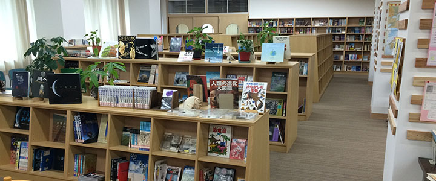
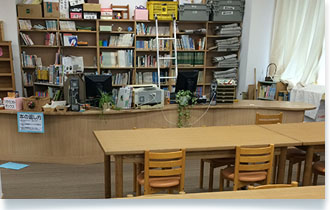
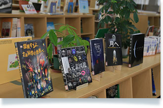
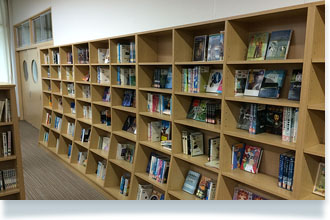

メディアセンター

「メディアセンターは、2014年10月に以前あった図書室を図書・学習ゾーンとして新装リニューアルをしました。メディアセンターの蔵書数は、約一万冊を超え、あらゆる分野の書籍を揃えています。読書以外に、自習や試験勉強にも活用できます。また、パソコンルームがすぐ横に隣接しており、最新の情報学習にも十分対応しています。

- 図書館カウンター
- 図書カウンターには、図書管理を行う司書が常駐しており、書籍の検索やそのほかの質問等に対応します。
また、子どもたちの学習環境を整えるために日々メディアセンターの利便性向上に貢献しています。

- 話題の書籍
- 近年話題になった本などを取りそろえることでよりいっそう子どもたちの知識向上に貢献しています。
また、ベストセラー以外にも多数の良書をそろえており、読書を通じてさまざまな視点を育む素地をつくり上げます。

- さまざまな分野の書籍
- メディアセンターには、約一万冊を超える書籍を取りそろえ、さまざまな分野にも対応しています。
また、時代の流れに伴って、新しい分野の書籍の取り寄せにも積極的に行っていく予定です。